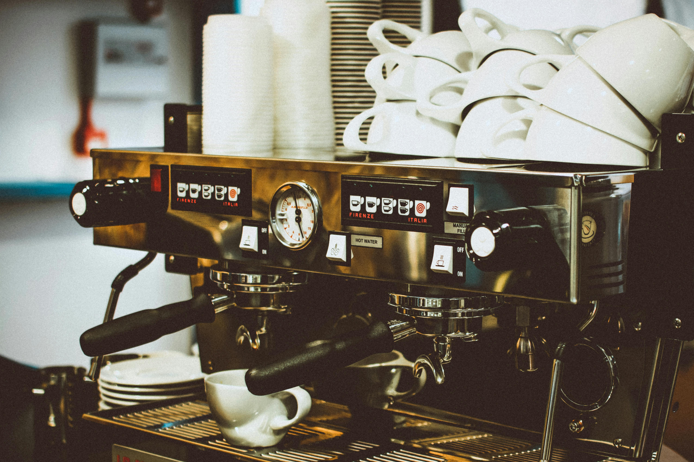
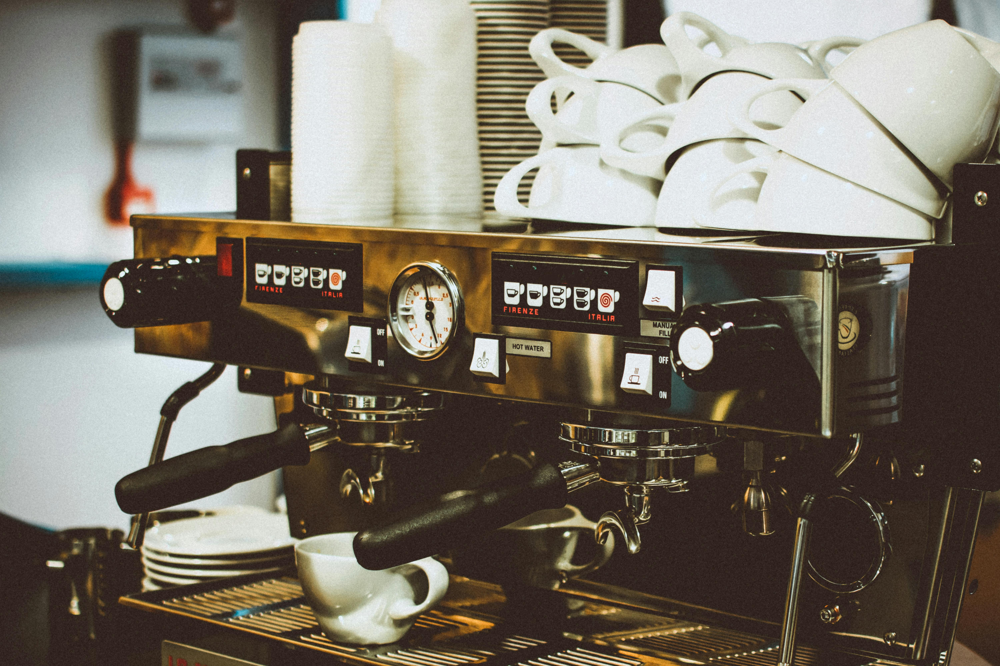

Jam berapa Jaga Café buka?
Kami buka setiap hari dari pukul 07.00 hingga 23.00. Mulailah harimu atau akhiri malam dengan kehangatan di sini.

Wi-Fi Gratis
Colokan Listrik
Suasana Nyaman
pertunjukan Musik
Mushola
Ruangan Ber-AC
Jaga Cafe didirikan dengan semangat untuk menghadirkan lebih dari sekadar tempat makan dan minum. Kami membayangkan sebuah ruang yang hangat dan menyambut, di mana siapa pun bisa merasa seperti di rumah— baik saat datang untuk bekerja, berkumpul dengan teman, atau sekadar menikmati waktu sendiri. Setiap cangkir kopi diseduh dengan penuh ketelitian, menggunakan biji pilihan untuk menghadirkan rasa yang kaya di setiap tegukan. Pastry dan hidangan kami dibuat segar setiap hari, dengan bahan-bahan berkualitas yang mencerminkan komitmen kami terhadap cita rasa. Kami bangga menyajikan layanan yang ramah agar setiap tamu merasa dihargai dan diterima sepenuh hati.

Lokasi: Jalan Pegangsaan Timur No. 58
Di sini, kamu bisa menikmati beragam pilihan makanan dan minuman dengan suasana modern yang tetap santai. Harga tetap ramah di kantong, tapi pengalaman rasanya gak kalah dari kafe-kafe premium.

Kopi
Roti Manis
Sandwich Panggang
Minuman Tropis
"Saya sangat menyukai suasana bersih dan nyaman yang ditawarkan kafe ini. Ragam minuman khas dan camilan lezat menjadikannya tempat favorit saya. Pelayanan yang ramah membuat pengalaman semakin menyenangkan."
"Saya tak pernah menyangka bahwa sensasi rasa seperti ini bisa ditemukan di menu mereka. Kreativitas rasa yang unik, ditambah atmosfer yang santai, membuat kunjungan saya terasa berkesan."
"Tempat ini sangat cocok untuk bekerja atau sekadar bersantai bersama teman. Wi-Fi cepat dan colokan listrik tersedia di banyak titik. Musik live di malam hari menambah suasana yang hangat dan hidup."
"Menu yang mereka sajikan tidak hanya enak tetapi juga ditampilkan dengan menarik. Rasanya seperti menikmati seni dalam secangkir kopi atau sepiring makanan. Tempat ini benar-benar menenangkan hati."
 


Kami buka setiap hari dari pukul 07.00 hingga 23.00. Mulailah harimu atau akhiri malam dengan kehangatan di sini.
Ya, kami menyediakan Wi-Fi berkecepatan tinggi secara gratis, lengkap dengan stopkontak di setiap sudut untuk kenyamananmu.
Kami memiliki ruang yang nyaman untuk rapat kecil atau segala acara yang bersifat pribadi. Silakan hubungi kami lebih awal untuk pemesanan.
Setiap Jumat dan Sabtu malam, kami hadirkan penampilan musik akustik. Ikuti media sosial kami untuk jadwal lengkap.
Kamu dapat reservasi melalui WhatsApp atau Instagram. Kami akan pastikan tempat terbaik tersedia untukmu.
Email:
jaga.cafe.info@gmail.com
No. Telepon:
+62 9999 9999 9999